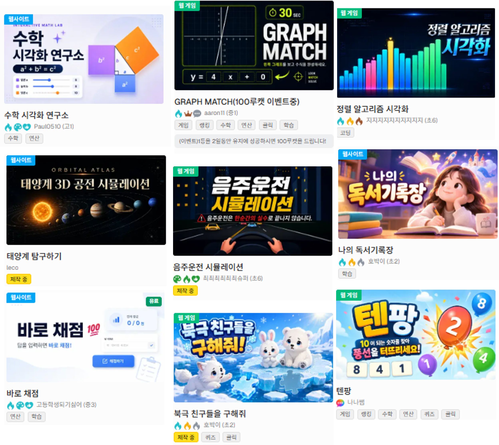

학부모님께 드리는 안내
우리 학원 학생들은 프로젝트 수업을 시작합니다.
AI가 코드를 쓰는 시대, 코딩 수업을 어떻게 바꾸는지 열두 장으로 정리했습니다.


왜 지금인가
이제 기업은 해내는 것을 봅니다.
넥슨과 CJ올리브네트웍스가 2026년 채용에서
코딩테스트를 없앴습니다.
넥슨
코딩테스트 대신 AI 도구로 실무 문제를 푸는 평가를 도입했습니다.
신입 게임 프로그래머 채용 · 서울신문 2026.8.27CJ올리브네트웍스
단독 코딩테스트 전형을 폐지하고 생성형 AI 활용 역량 검증을 도입했습니다.
2026년 하반기 신입 공채 · 굿모닝경제무한한 지식의 시대를 지나, 무한한 실행의 시대로 나아갑니다.
그러면 아이에게 남는 일은 무엇일까요?
AI가 만들고, 사람이 정합니다.
AI가 하는 일
- 코드를 씁니다
- 막힌 원인을 찾습니다
- 다른 방법을 보여 줍니다
아이가 하는 일
- 무엇을 만들지 정합니다
- 맞는지 판단합니다
- 왜 그렇게 했는지 설명합니다
AI에게 대체되지 않는 힘을 길러냅니다.
AI에게 대체되지 않는 아이
남의 불편을 알아보고, 사람을 움직이는 아이.
다른 사람의 문제를 공감하고 해결하는 힘, 많은 사람에게 감동을 주는 기획의 힘.
이 네 가지를 수업의 네 단계에서 하나씩 연습합니다.
프로젝트 수업이란
학생 한 명이, 스타트업이 됩니다.
창업을 가르친다는 뜻이 아닙니다.남의 불편을 찾아 만들고, 알리고, 반응을 받아 고치는 한 바퀴를 도는 것입니다. 이 한 바퀴가 한 달 수업이 됩니다.
기록이 다음 작품의 출발점이 됩니다.
1단계 · 만들고 공감능력
문제는 아이가 찾아옵니다.
주제를 정해 주고 따라 만들게 하지 않습니다.자기 교실의 불편은 그 아이만 알고 있고,
이 단계는 AI가 대신해 줄 수 없습니다.
2단계 · 공유하기 회복탄력성
공동체 안에서 도움이 되는 내 작품
회복탄력성을 기르기 위한 최고의 연습.끊임없는 시도와 실수의 연속입니다.


3단계 · 성장하고 스타트업 경험
스타트업의 한바퀴를 경험하는 활동
기획하고 만들고 판매하고 홍보하고 투자하는
경험을 할 수 있는 수업입니다.


4단계 · 기록하기 기록남기기
설명하지 못하면 완성이 아닙니다.
무엇을 시도했고 왜 그 방법을 골랐는지, 어디서 막혔는지를 개발일지와 결과보고서에 남깁니다.결과만 남으면 AI가 만든 것과 구별되지 않습니다. 과정이 남아야 그 아이의 것이 됩니다.


이 방식으로 먼저 수업한 학생들

학부모님이 보시게 될 것
진도표 대신, 매달 작품 하나.
상담에서 "이번 달에 이걸 만들었어요"를
작품 링크로 보여드립니다.개발일지와 결과보고서는 상담에서 함께 봅니다.
프로젝트 개발 보고서
1. 프로젝트 제목
약수 미로
2. 이 프로젝트를 만들게 된 이유는 무엇인가요?
소인수분해를 쉽고 재밌게 하기 위해서 이렇게 게임으로 만들어보고 싶었다.
집에서는 "맞았어?" 대신 이렇게 물어봐 주세요.
그래서 너는 어떻게 하기로 했어?
렛츠코딩라운지
AI 활용을 위한 안전한 환경
AI활용 프로젝트 교육에 안전망까지 더해져
학생들이 통제된 환경에서 작품활동에 집중할 수 있는
수업 환경을 제공합니다.
렛츠코딩앤플레이학원
063-714-2536
전북 혁신도시 출판로 46-5 대온빌딩 301호